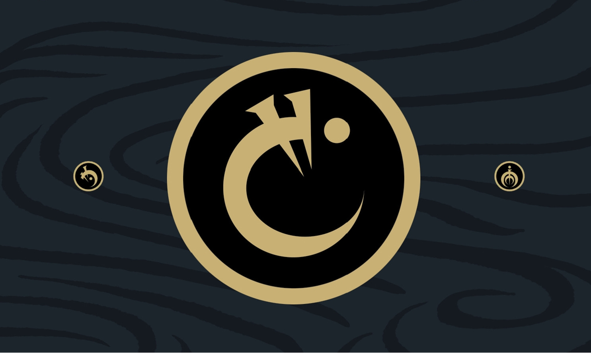

MistBorn

La saga se divide en dos eras principales, ambientadas en diferentes períodos de tiempo dentro del planeta Escadrial.
En la primera era, que comprende la trilogía inicial, se presenta un mundo oscuro y asolado por el dominio del Lord Legislador, un gobernante despótico y poderoso, y donde los nobles, dotados de poderes, ejercen un dominio implacable sobre los skaa, la clase trabajadora. Los protagonistas de esta era son Vin, una joven delincuente con habilidades alománticas latentes, y Kelsier, un ladrón y nacido de la bruma (un alomántico que puede quemar todos los metales). Juntos, forman una banda de rebeldes y planean derrocar al Lord Legislador y liberar al pueblo de la opresión.
En la segunda era, que abarca una tetralogía, el mundo ha evolucionado cientos de años después de los eventos de la primera era. La sociedad ha avanzado tecnológicamente y se encuentra en una época similar a la era industrial. Los protagonistas de esta era son Waxillium Ladrian, un noble y alomántico que regresa a la ciudad de Elendel para hacerse cargo de los asuntos familiares, y Wayne, su leal compañero y experto en disfraces. Juntos, se ven envueltos en una trama de intriga política, corrupción y amenazas misteriosas que ponen en peligro la estabilidad de Scadrial.
Mapa de Roshar

Libros
Ordenados por orden de Lectura
| Nº | Tipo Libro | Nombre | Enlace |
|---|---|---|---|
| 1ª era | |||
| 1 | Principal | El imperio final | Amazon |
| 2 | Principal | El pozo de la ascensión | Amazon |
| 3 | Principal | El heroe de las eras | Amazon |
| 4 | Secundario | Historia secreta | Amazon |
| 5 | Principal | Aleación de ley | Amazon |
| 2ª era | |||
| 6 | Principal | Sombras de identidad | Amazon |
| 7 | Principal | Aleación de ley | Amazon |
| 8 | Principal | Brazales de duelo | Amazon |
| 9 | Principal | El metal perdido | Amazon |